Test-Time Anchoring for Discrete Diffusion Posterior Sampling
Litu Rout1,2
Andreas Lugmayr1
Yasamin Jafarian1
Srivatsan Varadharajan1
Constantine Caramanis2
Sanjay Shakkottai2
Ira Kemelmacher-Shlizerman1
1 Google
2 UT Austin
[Paper]
[ArXiv]
[Code]

We introduce Anchored Posterior Sampling (APS) for masked diffusion foundation models, built on two key innovations: (i) quantized expectation, which provides gradient-like guidance for discrete diffusion with purely discrete embedding space, and (ii) anchored remasking, which enables adaptive decoding during inference. Our method supports a variety of linear and nonlinear image restoration tasks (left three columns), as well as mask-based garment styling and reference-guided style transfer (last column).
Abstract
We study the problem of posterior sampling using pretrained discrete diffusion foundation models, aiming to recover images from noisy measurements without retraining task-specific models. While diffusion models have achieved remarkable success in generative modeling, most advances rely on continuous Gaussian diffusion. In contrast, discrete diffusion offers a unified framework for jointly modeling categorical data such as text and images. Beyond unification, discrete diffusion provides faster inference, finer control, and principled training-free Bayesian inference, making it particularly well-suited for posterior sampling. However, existing approaches to discrete diffusion posterior sampling face severe challenges: derivative-free guidance yields sparse signals, continuous relaxations limit applicability, and split Gibbs samplers suffer from the curse of dimensionality. To overcome these limitations, we introduce Anchored Posterior Sampling (APS) formasked diffusion foundation models, built on two key innovations—quantized expectation for gradient-like guidance in discrete embedding space, and anchored remasking for adaptive decoding. Our approach achieves state-of-the-art performance among discrete diffusion samplers across linear and nonlinear inverse problems on the standard benchmarks. We further demonstrate training-free stylization and text-guided editing using our sampler.
Method: Test-Time Anchored Posterior Sampling
Theoretical Results
Theorem 3.1 provides a principled training criterion for discrete posterior samplers. The likelihood-based tilt log q(y|xϕ(Zt(i))) enforces measurement consistency When y is absent, the tilting terms vanish and the objective reduces to the standard masked diffusion NELBO (5). The negative cross-entropy term is zero for unmasked tokens and gets supervision for masked tokens, with weights determined by the noise schedule.

For retraining, one can minimize LDDPS(x, y; ϕ) with respect to ϕ to obtain a discrete posterior sampler. In practice, however, retraining a large-scale foundation model per task is often infeasible due to excessive compute requirement and lack of training data. We therefore focus on the training-free case.

Theorem 3.2 shows how to perform efficient test-time training using a lightweight network while not changing the weights of the base foundation model.
In summary, retraining a new network ϕ for every task would require backpropagation through massive denoisers (e.g., 8B parameters in MMaDA), which is computationally prohibitive. Our theoretical results show that posterior sampling can be done efficiently by reusing the pretrained model and optimizing only lightweight parameters at test time. Next, we introduce two key ingredients—Quantized Expectation (§3.2.1) and Anchored Remasking (§3.2.2)—that make this trainingfree posterior sampling practically implementable. These two ideas together form our Algorithm 1: Anchored Posterior Sampling (APS); please see Appendix B.2 for a detailed discussion.
Visual Illustration
To better understand the impact of our algorithmic innovations, we conduct a systematic ablation study on ImageNet SR (4×), as shown below. Our analysis focuses on three core design choices: (i) standard remasking, which highlights the limitations of confidence-based token selection under the prior; (ii) quantized expectation, which addresses sampling bias and improves measurement consistency; and (iii) anchored remasking, which preserves informative tokens identified by optimization while suppressing spurious high-confidence background tokens. Together, these ablations disentangle the contributions of each component, providing both theoretical insight and qualitative evidence (Figure 6 in the paper) into how APS achieves stable and measurement-consistent posterior sampling.
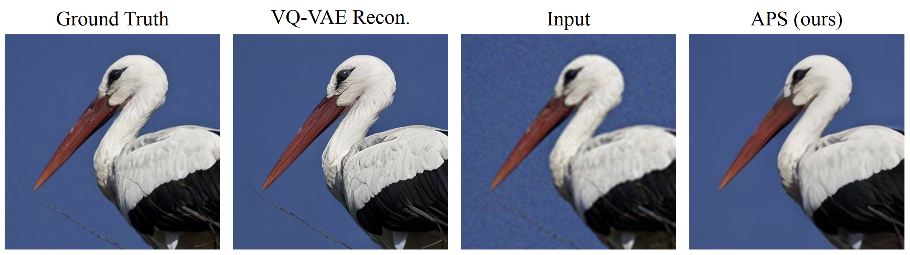
Standard Remasking
The standard remasking process favors unmasking the most confident tokens under the prior distribution xθ(zt).
In language generation, this corresponds to unmasking frequent, low-information tokens (e.g., articles or conjunctions) (Rout et al., 2025). Analogously in images, the model tends to unmask background regions first, since they dominate training statistics and are easier to predict. As a result, informative foreground tokens remain masked until late in the process that limits semantic guidance.
Qualitatively, the figure below illustrates this phenomenon using the discrete diffusion foundation model MMaDA. While the model confidently unmasks background tokens early, the salient object is revealed only much later, highlighting the limitation of standard remasking for posterior sampling.
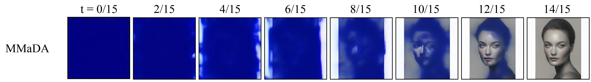
Quantized Expectation
Standard remasking suffers from two key issues: (i) sampling bias, and (ii) independent token-wise confidence. When sampling tokens directly from the unconditional distribution xθ(zt), the model may pick unrelated or spurious tokens, which—once unmasked—remain fixed in all future steps. This introduces inconsistency and often locks the model into poor generations.
To address this, we propose quantized expectation (§3.2.1). Instead of sampling, we tilt the unconditional distribution xθ(zt) towards the measurement likelihood, obtaining an approximate posterior xφ(zt). We then optimize in the span of codebook embeddings by treating the tilted probabilities as coefficients in a linear combination and passing their expectation through the decoder using a straight-through estimator. The resulting embedding is then quantized back to the nearest valid token. This procedure implicitly maximizes the measurement likelihood, avoids sampling noise, and enables the discovery of tokens with zero prior probability mass but strong measurement consistency–leading to a better posterior sample.
We treat such tokens as “anchor tokens,” since they minimize reconstruction error and provide critical guidance under the measurement operator. As shown in the figure below (APS-I), quantized expectation corrects sampling bias and yields reconstructions that remain consistent with observations throughout the denoising trajectory.
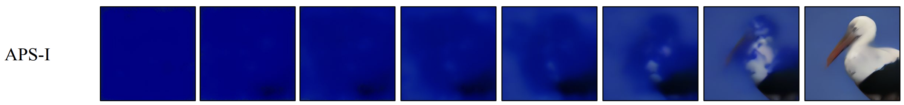
Anchored Remasking
A limitation of confidence-based remasking under the prior is that anchor tokens, obtained through our optimization procedure, may receive near-zero probability under xθ(zt). As a result, the model would discard these informative tokens in favor of background tokens, which the prior predicts with high confidence. This reintroduces the very bias we aim to avoid using quantized expectation.
To address this, we compute token confidence using the posterior estimate xφ(zt) rather than the unconditional prior. In this way, anchor tokens identified via quantized expectation are preserved, while low-likelihood background tokens are remasked. Qualitatively, this effect is evident at t = 6/15 in the figure below (APS-II): unlike the standard prior-based strategy (second row), which prematurely unmasks background pixels, our approach commits to anchor tokens aligned with the bird’s body. This ensures that the background (blue sky in the measurement) is correctly downweighted, as it is inconsistent with the prior white background generated by xθ. Subsequent steps therefore refine the image conditioned on these anchor tokens, reducing conditional entropy and producing reconstructions that remain faithful to the measurements.
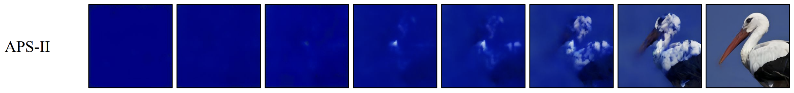
Experiments: Test-Time Anchored Posterior Sampling
Results on Linear Inverse Problems
Qualitative results on FFHQ and ImageNet for SR (4×) and Gaussian deblur. Compared to DPS and G2D2, APS yields better results with sharper texture and refined facial features. For instance, in the third row, APS reconstructs fine strands of the white and brown dog’s fur.
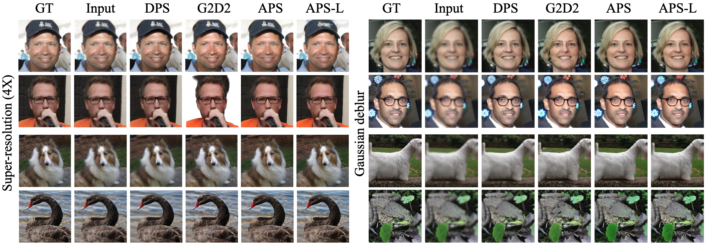
Quantitative results on Super Resolution (4×) and Gaussian Deblurring. APS consistently outperforms prior discrete samplers (G2D2, SGDD, and SVDD-PM) and remains competitive with strong continuous diffusion baselines (shaded gray).
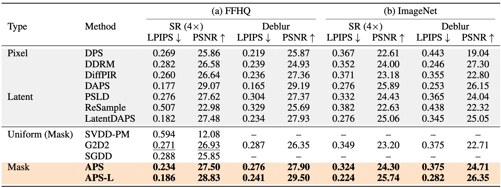
Results on General Inverse Problems
Qualitative results on FFHQ for linear (top row) and nonlinear (bottom row) inverse problems. APS and APS-L recover high-fidelity images from severely degraded inputs.
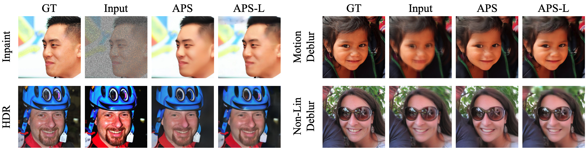
Quantitative results on general inverse problems. We report results on two additional linear (random inpainting, motion deblurring) and nonlinear (HDR, nonlinear blur) tasks. Since G2D2 and SGDD do not evaluate on these tasks, we compare our discrete sampler against representative continuous baselines: DPS (pixel-space) and PSLD (latent-space).
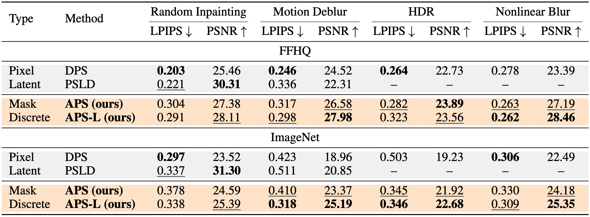
Results on Reference-Based Stylization
Qualitative results on stylization. For each case, our APS algorithm conditions on a single reference style image together with a text prompt to generate the stylized output images. The prompt follows the template: “Generate an image in [style] style. A [class], high detail, photorealistic.” Here, [style] denotes the reference style (e.g., Celestial Artwork), and [class] corresponds to the label shown below (e.g., Carousel).
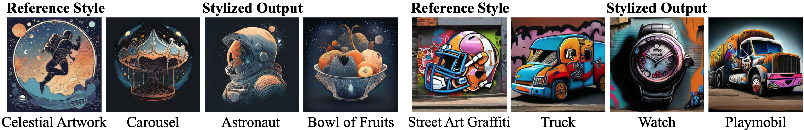
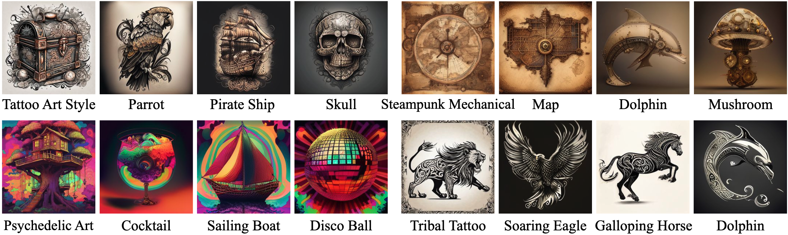
Quantitative results demonstrating that our posterior sampler unlocks stylization capabilities absent in the base model. Notably, APS also surpasses continuous baselines such as IP-Adapter (Ye et al., 2023) and StyleAligned (Hertz et al., 2023) on ImageReward and CLIP-T, despite relying on a weaker generative prior (Yang et al., 2025).
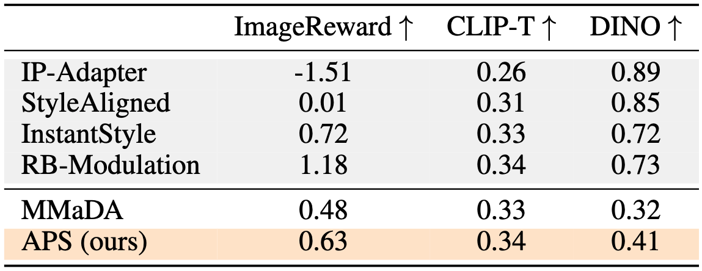
Qualitative comparison on reference-based stylization. We compare our full method (MMaDA + APS) with the base model (MMaDA) and several state-of-the-art contnuous diffusion methods across four style-prompt pairs. For each row, all methods use the same Style Reference image (left) and text prompt (shown below the images).
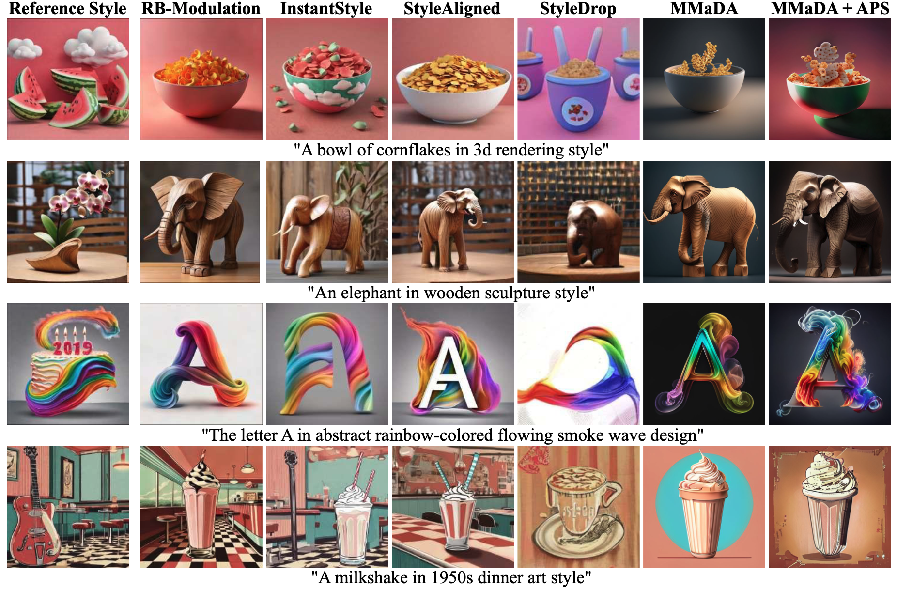
Results on Text-Guided Block Inpainting
Text-guided block inpainting on high-resolution (1024×512) images. Our approach (APS) generates prompt-aligned garment completions compared to prior methods. Red boxes highlight prompt-misalignment in competing approaches. In the first row, the prompt specifies an untucked, oversized T-shirt with vibrant colors—details missed by Imagen 3, Flux, and HD-Painter. In the second row, our approach correctly buttons the shirt all the way to the top.
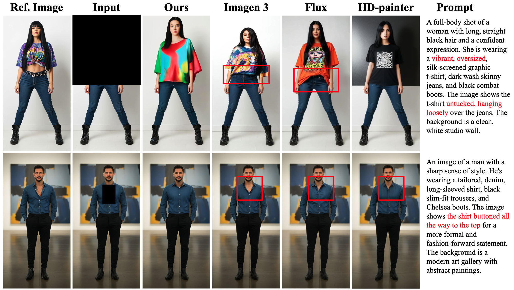
Sampling Efficiency: Continuous vs Discrete Diffusion
Quantitative results on sampling efficiency of continuous and discrete samplers.PDM/LDM denote pixel-/latent-space continuous diffusion models, respectively; VQ-Diffusion and MMaDA are discrete diffusion models. Rows shaded gray report runtimes on a single NVIDIA A6000 GPU copied from G2D2 (Murata et al., 2024); rows shaded orange are measured by us on a single NVIDIA A100 GPU.
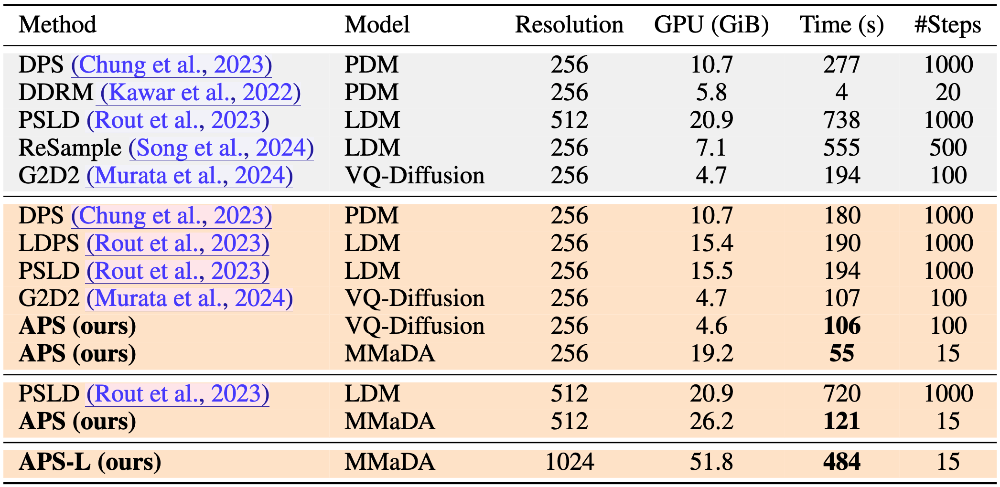
Comparison against continuous (pixel/latent) diffusion:
Pixel-space samplers (DPS, DDRM) either require very long Markov chains (e.g., DPS: 1000 steps, 277s) or sacrifice quality when shortened; latent-space samplers (PSLD, ReSample) still need 500–1000 steps and hundreds of seconds per image at 256×256–512×512 resolutions (e.g., PSLD: 738s at 512 × 512).
Comparison against discrete diffusion:
Under the same budget, APS matches or improves G2D2’s runtime while yielding better reconstructions: at 256 × 256 with VQ-Diffusion both methods use 100 steps, but APS yields higher quality (see Table 5); with the stronger MMaDA prior at 512×512, APS achieves consistently better LPIPS/PSNR as discussed in §4. Moreover, our 1024×1024 configuration (APS-L) demonstrates better test-time scaling behavior compared continuous diffusion: we keep 15 steps and still obtain substantial quality gains at reasonable cost (484s).
Importantly, continuous methods struggle to match this performance without prohibitive runtimes. PSLD (Rout et al., 2023) already takes nearly 12 minutes to process a single 512×512 image and more complex methods such as P2L (Chung et al., 2024) take around 30 minutes for the same resolution. Therefore, training-free posterior sampling using continuous diffusion at very high resolutions such as 1024×1024 becomes computationally prohibitive. In contrast, discrete diffusion shows better scaling behavior.
BibTeX
@article{rout2025aps,
title = {Test-Time Anchoring for Discrete Diffusion Posterior Sampling},
author = {Rout, L. and Lugmayr, A. and Jafarian, Y. and Varadharajn, S. and Caramanis, C. and Shakkottai, S. and Shlizerman, I.},
booktitle = {arXiv preprint},
year = {2025}
url = {https://arxiv.org/pdf/2510.02291}
}
Acknowledgements:
The authors thank the Google's ARML Commerce team for their support and for providing a stimulating environment for this research, which was conducted while the first author was an intern at Google. We are also grateful to Akash Sengupta and Yingwei Li for their insightful discussions during the early stages of this project. This research has been partially supported by NSF Grants 2112471, 2505865 and the UT Austin Machine Learning Lab.